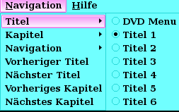

DVD Audio rippen
Dieser Artikel wurde für die folgenden Ubuntu-Versionen getestet:
Ubuntu 16.04 Xenial Xerus
Zum Verständnis dieses Artikels sind folgende Seiten hilfreich:
Dieses Skript gestattet es, mit Hilfe einer einfachen "grafischen" Oberfläche Lieder / Musikstücke von DVDs auf den Computer zu übertragen. Vor der Benutzung ist der Artikel aufmerksam zu lesen.
Installation¶
Folgende Pakete müssen installiert [1] werden:
mplayer
zenity
 mit apturl
mit apturl
Paketliste zum Kopieren:
sudo apt-get install mplayer zenity
sudo aptitude install mplayer zenity
Optional können die folgenden nützlichen Pakete installiert werden:
vlc (universe - Medienplayer )
audacity (Audiobearbeitung )
soundkonverter (Audiokonvertierung oder )
soundconverter (Audiokonvertierung)
mit apturl
Paketliste zum Kopieren:
sudo apt-get install vlc audacity soundkonverter soundconverter
sudo aptitude install vlc audacity soundkonverter soundconverter
Hinweis:
Um die Voraussetzungen zum Auslesen einer DVD zu schaffen, siehe Codecs.
Nutzung¶
Achtung!
Der Verfasser dieses Skripts lehnt jegliche Haftung für Schäden jegwelcher Art ab, die durch dieses Skript oder in Folge der Nutzung dessen entstanden sind.
Vorbereitung¶
Skript¶
Nachdem man die benötigten Pakete heruntergeladen und installiert hat, lädt man sich das Skript hier  herunter. Nun öffnet man ein Terminal [2] und wechselt in das Verzeichnis, in dem das Skript liegt und macht es ausführbar.
herunter. Nun öffnet man ein Terminal [2] und wechselt in das Verzeichnis, in dem das Skript liegt und macht es ausführbar.
cd /weg/zum/verzeichnis chmod a+x dar.sh
Alternativ geht das auch über das Kontextmenü der meisten Dateimanager.
DVD¶
Wenn man noch nicht genau weiß, wo sich das gewünschte Audiostück befindet, kann man die DVD z.B. mit dem VLC öffnen und über das DVD Menu zur entsprechenden Stelle gehen:
"Menuleiste -> Navigation -> Titel"
Hier merkt man sich die Titelnummer. (Durch einen Punkt gekennzeichnet)

Anschließend wechselt man auf:
"Menuleiste -> Navigation -> Kapitel"
und merkt sich auch hier die entsprechende Nummer.
Benutzung¶
Skript¶
Nun starte man das Skript, wahlweise über einen Filemanager/Filebrowser oder über ein Terminal [5].
Als erstes taucht ein Fenster auf, dass einem nach der Titelnummer fragt, die gibt man ein und drückt ⏎ oder klickt einfach auf "o.k".
Als nächstes (kann ein kleine Weile dauern) taucht ein zweites Fenster auf und fragt nach dem Kapitel, auch diese gibt man ein (n für den ganzen Titel, x-y für Kapitel x bis y z.B. 5-10) und bestätigt mittels ⏎ oder einem Klick auf "ok".
Hinweis:
Es kann sein, dass ein pures x (z.B. 8) als ein "ab x" interpretiert wird und dann alles ab x kopiert wird, in diesem Fall kann es helfen, wenn man x-x (z.B. 8-8) nutzt.
Als drittes taucht ein Fenster auf und fragt einem nach dem Namen, den man der Datei geben möchte - die Angabe darf keien Leerzeichen beinhalten, sonst erfolgt die Bennenung nur nach dem ersten Wort. Die Dateiendung (.wav) muss man nicht angeben, das geschieht automatisch.
Achtung!
Das Skript überprüft nicht, ob bereits eine Datei mit dem Namen existiert und überschreibt diese eventuell!
Wenn das kopieren der Audiodatei von statten gegangen ist, taucht ein erneutes Fenster auf und teilt einem mit, wo man die Datei finden kann.
Zusätzliches¶
Datei schneiden¶
Es kann vorkommen, dass in einem Audiostück mehr als nur das Lied vorkommt, dass man haben möchte. Hier kann man zu beispielsweise Audacity greifen, um das entsprechende Stück herauszulösen.
Format ändern¶
Sollte man nur das Format ändern wollen, kann man Soundkonverter und Soundconverter nutzen.
Das Skript¶
Das Skript ist wie folgt aufgebaut:
1 2 3 4 5 6 7 8 9 10 11 12 13 14 15 16 17 | #!/bin/bash ## Der Verfasser dieses Scripts lehnt jegliche Haftung für Schäden jegwelcher Art ab, die durch dieses Script oder in Folge der Nutzung dessen entstanden sind. if ! TITLE=`zenity --entry --text "Bitte Titelnummer eingeben" --title "Titel"`; then exit; fi if ! CHAPTER=`zenity --entry --text "Bitte Kapitelnummer eingeben. n für alles." --title "Kapitel"`; then exit; fi if ! FILE=`zenity --entry --text "Bitte Ausgabedatei angeben (ohne Endung)"`; then exit; fi mplayer dvd://$TITLE -chapter $CHAPTER -ao pcm:file=$HOME/$FILE.wav -vo null zenity --info --text="Recorded Sound from DVD, Title: $TITLE Chapter: $CHAPTER\nto $HOME/$FILE.wav" --title Recorded |
Für die Konsole/Shell¶
Für diejenigen, die das Skript ohne grafische Oberfläche nutzen wollen, gibt es auch ein Textversion, die hier heruntergeladen werden kann.
Skript für die Shell¶
1 2 3 4 | #!/bin/bash ## Der Verfasser dieses Scripts lehnt jegliche Haftung für Schäden jegwelcher Art ab, die durch dieses Script oder in Folge der Nutzung dessen entstanden sind. mplayer dvd://$1 -chapter $2 -ao pcm:file=$HOME/$3.wav -vo null |
Im Verzeichnis mit dem Skript
./darsh.sh <Titel> <Kapitel> <Filename>
Abänderungsbeispiele¶
Sollte man dennoch das Skript selber noch abwandeln wollen - sei es zum Beispiel, weil man lieber eine .mp3 erhalten möchte - kann man das natürlich tun. Ein Blick in Skripte kann einem zusätzliche Ideen und einem auch der Materie näher bringen. Eine gewisse Vertrautheit mit der Shell und ihren Befehlen ist hier natürlich von Vorteil.
mp3 als finales Format¶
Um eine mp3 als Ausgabeformat zu erhalten, braucht man einen MP3 Encoder
lame (multiverse)
mit apturl
Paketliste zum Kopieren:
sudo apt-get install lame
sudo aptitude install lame
und ersetzt:
zenity --info --text="Recorded Sound from DVD, Title: $TITLE Chapter: $CHAPTER\nto $HOME/$FILE.wav" --title Recorded
durch:
cd $HOME lame $FILE.wav $FILE.mp3 rm $FILE.wav zenity --info --text="Recorded Sound from DVD, Title: $TITLE Chapter: $CHAPTER\nto $HOME/$FILE.mp3" --title Recorded
- Erstellt mit Inyoka
-
 2004 – 2017 ubuntuusers.de • Einige Rechte vorbehalten
2004 – 2017 ubuntuusers.de • Einige Rechte vorbehalten
Lizenz • Kontakt • Datenschutz • Impressum • Serverstatus -
Serverhousing gespendet von